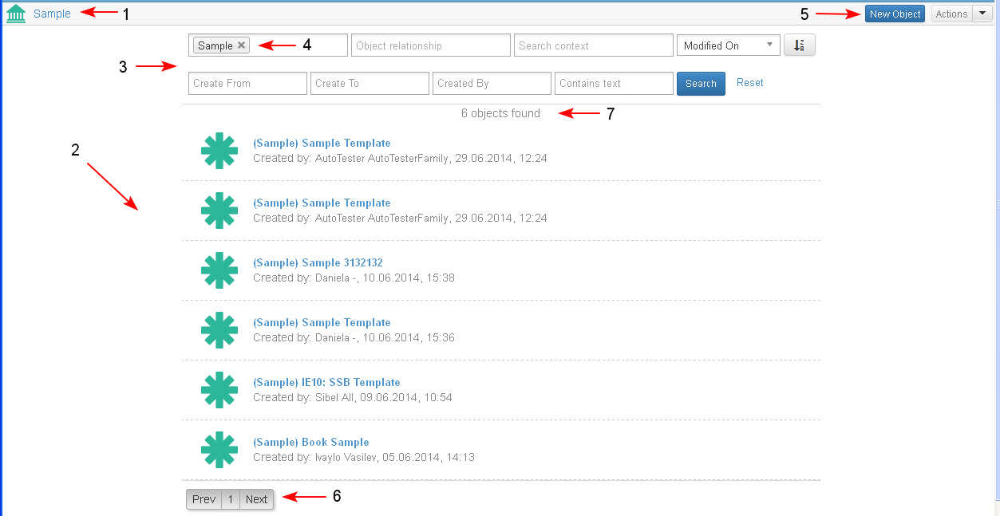
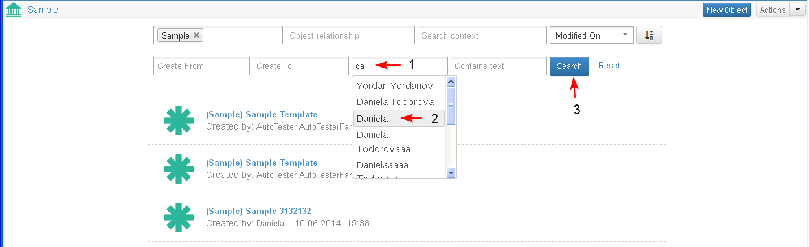
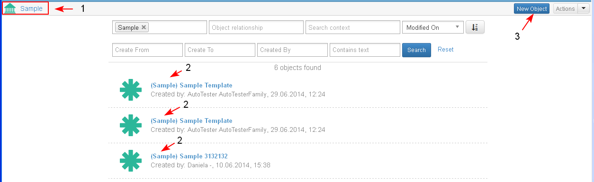

Access to Objects Library
All objects in EMF are organized in a context independent library and registered users are able to search them, review them, report on them and perform some common actions on them (like delete, lock, attach to case).
Preconditions
- The user is logged in and his/ her personal dashboard is opened.
- In the system exists is at least one object of the selected type.
The Objects Library in accessible from the main menu.
- The user selects the Object Library (1).
- A sub-menu opens with different objects in different libraries in it (2). The user is able to create a new object directly in the Object Library (3).
- The user selects an existing library to check the library page components (4).

- The system opens the selected library. The objects organized in the library are of the same type.
- There is a header with the library name (1) and an icon on top of the library.
- A list with all objects of that type listed in the library is displayed (2). The objects are listed, sorted by default by date of creation/ update and the latest ones are on the top.
- There is a search criteria panel on the top of the library (3).
- The object type criteria field is preselected with the type of the library (4).
- There is a toolbar with button for creation of New Object and Actions drop down menu (5).
- The found objects in the system are paginated - maximum 25 in page (6).
- A message about the number of founded objects is displayed to the user (7).

Search in Objects Library
The user may search objects in the displayed Library using different criteria.
- The user types text in a selected field (1).
- An auto-suggest menu opens during the typing and the user may select a value directly from the list (2).
- When the necessary criteria are entered the user clicks "Search" (3).

- The initially displayed result of objects in the library is restricted and only the 2 existing ones which comply with the entered criteria (1) are displayed (2).

Create New Object from Library
The user is able to create new objects in a given object library.
Create New Object from Main Menu
- The user selects the action from Main Menu/ Object Library/ New Object (1-2).

- The user is redirected to the screen where he/ she is able to select from a list with available object types in the system.
The newly created object will be of the selected type (1-2-3-4). For details see topic "Create New Object"

Create New Object in Library with One Object type
The user has opened a selected Object Library (here "Sample") (1). In the library only objects of the selected type are displayed (2).
- The user selects the action "New Object" (3) in the opened library.

- The user is redirected by default to the landing page of the same object type ("Sample") as the object type library (1) and is able to change the object type (2).
For details see topic "Create New Object"

Create New Object in Library with Many Object types
The user is in objects library with more than one object types displayed in one library.
- The user selects the action "New Object" in the opened library with many object types.
- The user is redirected to the screen where he/ she is able to select from a list with available objects the object type to be created
=================================
Configure object types to be displayed - admin action
ORUC15-R06: Configure object types to be displayed
User Story:
As a system administrator I want to be able to configure what object types to be displayed in a object library AND the system to allow support of more than 1 object libraries.
Scenario 1:
- Given: In our institution we have departments that work with different object types - liкe Paintings, Scultures, Photographies, Textile, Books and they don't want to share the same object library
- When: The user opens Textile Library
- Then: Only cultural objects of type "Textile" are displayed.
=============
- (Not Ready) New Select "Search for objects" action (facet)
As a normal user I want to be able to additionally facet the objects in the search result, so that I easily find what to search for.
Scenario 1:
- Given: I search for cultural objects updated by me during the last month. In the search result I have objects from different types. The facets show: 5 objects from type Painting, 3 from type Drawing, 6 from type Sculpture.
- When: I select in the facet objects from type Drawing
- Then: The search result is restricted and only the 3 drawings are displayed
- (New) There is always a message to the user that informs him about the total number of objects in the system, that satisfy the search criteria and the number of the displayed ones:
"There are X objects displayed out of Y"
If no search criteria is entered (for example when the search screen is initially opened) then in the message "There are X objects displayed out of Y", Y will show the total number of objects in the system.
- (Not Ready) List available actions for objects in the result list
As a normal user I want to be able in the object library to perform actions on an object (like Clone, Delete, Export) without to open the object landing page.
Scenario 1:
- Given: I am in the object library
- When: I select Clone from the list with actions next to the object
- Then: The object is cloned
- (Not Ready) Actions on group of objects
As a normal user I want to be able to select more than one objects and to perform mulch-object actions on them (Delete, Attach to Project, ?Attach to Case)
Scenario 1:
- Given: I am in the object library
- When: I select 5 objects AND I select Delete action
- Then: All of the five actions are deleted